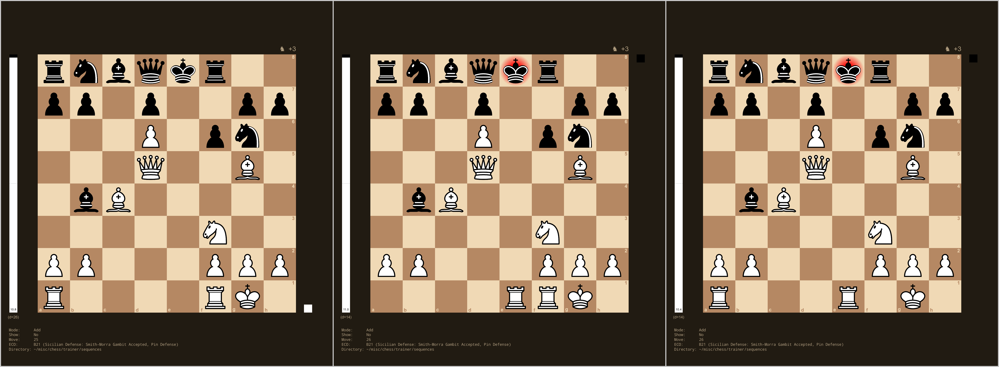
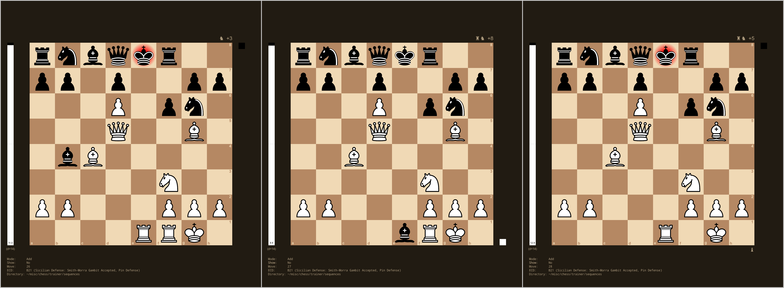
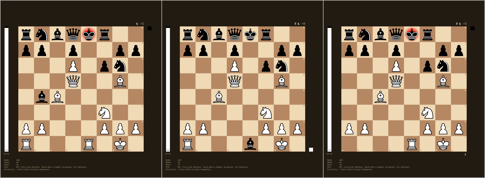
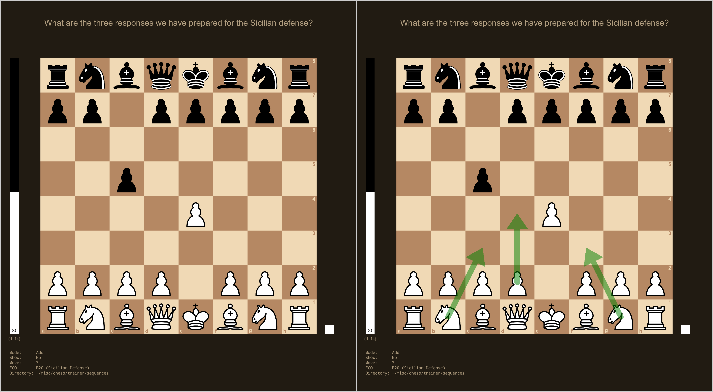

man-advanced.RdThe trainer offers some advanced functionality that is documented on this page. To make use of these features, you first need to toggle on the ‘advanced mode’ with Ctrl + 9.
At the end of a sequence, there are sometimes multiple ‘end moves’ that could be considered equally good and that should be accepted as correct. These can be added as follows.
Once you have arrived at the position where multiple end moves are possible, make the first possible end move. Then press Ctrl + a. The last move will be stored as one of the end moves and taken back. Then make the second possible end move. Continue in this manner until all acceptable end moves have been entered.
As an example, in the position shown on the left, two moves are equally good, namely Rae1+ and Rfe1+ and both moves pretty much win the game for white. Once we have arrived at the position shown on the left, make the first move, (i.e., Rae1+), press Ctrl + a, and then make the second move (i.e., Rfe1+). Then we can save the sequence with the s key.

In test mode, both moves (i.e., Rae1+ and Rfe1+) will then be accepted as correct. Also, at the end of such a sequence, all possible end moves will be shown as arrows.
Sometimes, it may be of interest to continue sequences after the various end moves. In this way, branching can be introduced into a set of sequences.
Consider again the example above. After Rae1+, black may capture the rook with the bishop (Bxe1), which is best followed by Rfe1+. Similarly, if we first play Rfe1+, then Bxe1 should be followed by Rae1+. So, depending on the end move chosen, we may want to continue down these two branches. This can be accomplished as follows.
First, we create a sequence with the two end moves described above (i.e., Rae1+ and Rfe1+). However, before saving this sequence, press Ctrl + e. In the console, you can then edit the end moves that were entered. Press n in the console followed by 1 to specify the filename of the sequence that should be played automatically when Rae1+ is made as the end move. Similarly, press n followed by 2 to specify the filename of the sequence that should be played automatically when Rfe1+ is made as the end move. Now you can save the current sequence with these two end moves.
Next, you need to create the two sequences that should be the continuations of these two end moves. The first should start immediately after the Rae1+ move. Here, the first move will be Bxe1, followed by Rfe1+. Save this sequence with the appropriate filename.

The second continuation sequence should start immediately after the Rfe1+ move. Here, the first move will again be Bxe1, followed by Rae1+. Again, save this sequence with the appropriate filename.

In test mode, when playing the sequence that can end with either Rae1+ or Rfe1+, the respective continuation sequence will automatically be played.
Note that one does not have to specify a continuation for all end moves that were entered. Also, in principle, one can introduce further branching in a particular branch. However, such sub-branching can become cumbersome to enter.
When saving the sequences, it is recommended to use a naming scheme that indicates the branching. For example, suppose we name the sequence that can end with either Rae1+ or Rfe1+ as <basename>.rds. Then the two sequences branching off this sequence could be named <basename>_<branch1>.rds and <basename>_<branch2>.rds. Replace <basename>, <branch1>, and <branch2> with suitable names.
At the end of a sequence, one may want to create a ‘test’ to quiz the player for certain information (e.g., about possible continuations). Such a test can be created as follows.
Once the position has been reached where the test should occur, press Ctrl + t. You will then be immediately prompted for a text to describe the test in the console. Enter the text and go back to the board. Now you can add annotations (i.e., arrows and circles) that should be treated as the correct response.
As a simple example, suppose we have prepared three possible responses to the Sicilian defense (1. e4 c5), the main variation (2. Nf3), the closed variation (2. Nc3), and the Smith-Morra gambit (2. d4). We want to test if we remember all three responses. In the position shown on the left, we press Ctrl + t, enter an appropriate prompt for the test (e.g., ‘What are the three responses we have prepared for the Sicilian defense?’) and then we draw the three arrows as shown on the right. Then we can save the sequence with the s key.

When playing such a sequence in test mode, the player is then prompted with the text at the chosen position and has to draw in the arrows that correspond to the correct response.
At times, it can be useful for the trainer to flush the console (clear the screen and move the cursor to the top left). Using F, you can toggle this behavior on/off.
Note that flushing does not work under Rgui. Also, whether flushing works depends on the terminal used to run the trainer.
With Ctrl + u, one can toggle on an ‘upside down mode’. In this mode, the pieces moved by the player are shown at the top instead of the bottom. This can be useful when practicing sequences on a real board where another human player is making the computer moves.
With Ctrl + 0, one can edit the session history of the current player (i.e., delete one or multiple rows).